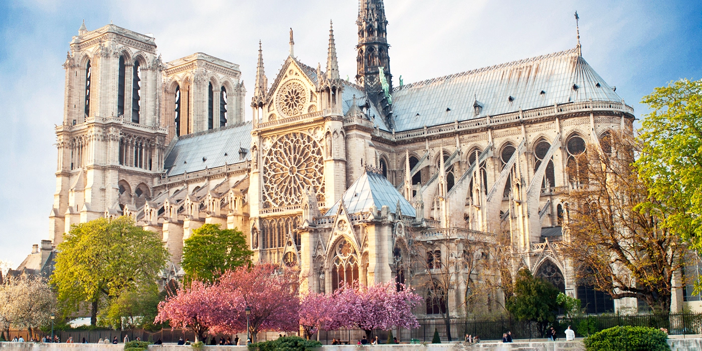
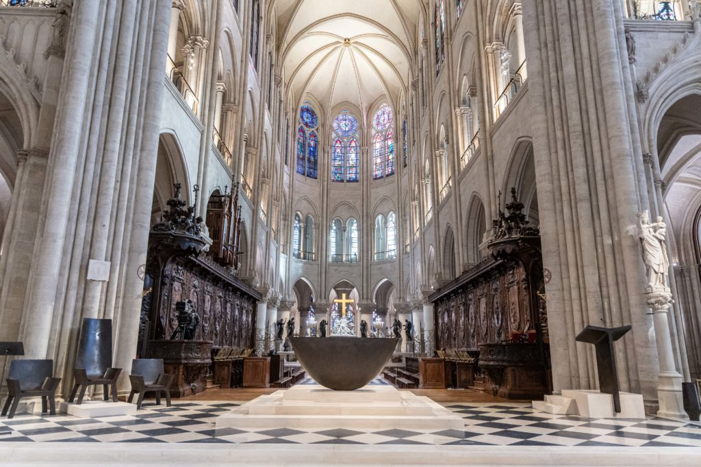
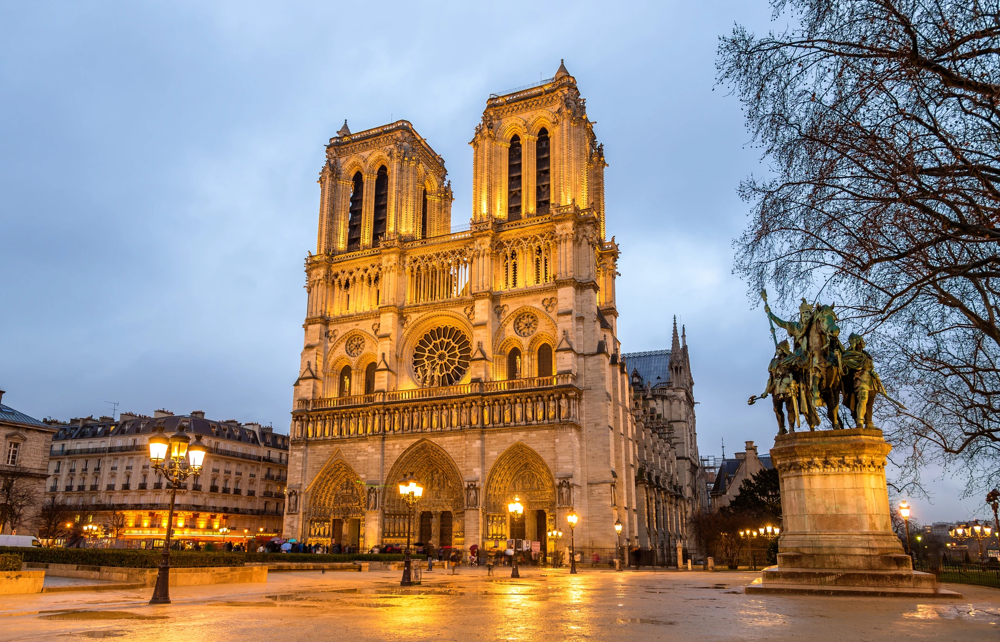
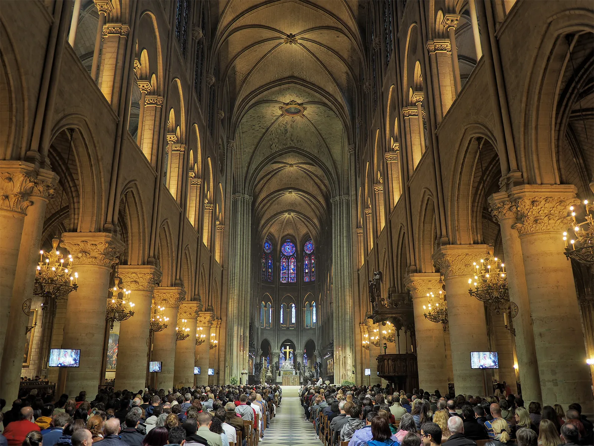

Notre-Dame de Paris is one of the finest examples of French Gothic architecture in the world. Construction of the cathedral began in 1163 under Bishop Maurice de Sully and was largely completed by the 13th century, with various additions made throughout the medieval period. It stands on the Île de la Cité, a small island in the middle of the River Seine in the heart of Paris.
The cathedral is renowned for its extraordinary stained glass windows, particularly the three large rose windows, and for the dramatic flying buttresses that support its towering walls. For centuries, Notre-Dame has been the spiritual heart of Paris — hosting royal weddings, coronations, and significant moments in French national life.
In April 2019, a devastating fire caused the collapse of the cathedral's spire and severely damaged the roof. An extraordinary restoration effort was launched, and Notre-Dame reopened to visitors in December 2024 following five years of meticulous reconstruction work. Today, visitors can once again experience this masterpiece of medieval craftsmanship in its renewed splendor.


